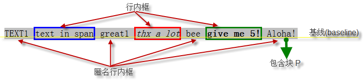
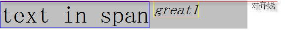
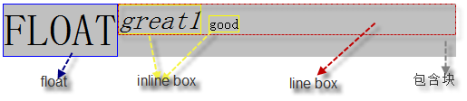

可视化格式模型介绍
三维的可视化格式模型（Visual formatting model） 是非常抽象的概念。它是 CSS 布局的核心，通过它，框( box )可以获得应有的尺寸，放到需要的位置。
可视化格式模型的官方说法是，它规定了用户端在媒介中如何处理文档树( document tree )。以下是对其中关键词的解释：
- 用户端：对我们来说一般指浏览器。
- 媒介：展现页面的介质。例如，纸媒介，听觉浏览器和显示器等3。
- 文档树( document tree )：源文档中元素树的编码。树中，每一个元素恰好由一个父元素。根元素是例外，它没有父元素。就是 document 和页面上的元素所构成的类似树形的结构。
可视化格式模型涵盖的东西比较多，只有彻底把这些概念和用法搞明白了，才能正确理解和掌握页面中文档树的结构和布局。 涉及的内容有盒子模型，块级元素和块框，行内元素和行框，浮动，定位分层等。
在可视化格式模型中，每一个元素都会根据盒子模型产生0个或多个box，而这些box的布局受以下因素的影响：
- box尺寸和类型
类型是指 display 选项值所决定的元素类型，如：DIV 是块级元素，SPAN 是行内元素等，这个特性会使元素产生相应的控制框，Controlling box - 定位布局
元素在布局时，会根据4种定位来布局文档流。分别是，常规流、相对定位、绝对定位和固定定位（static,relative,absolute,fixed）。 - 在文档树中，元素之间的关系
比如，一个块元素包含两个互为兄弟节点的浮动元素，后面那个浮动元素的布局，会受前面元素以及它包含块的影响。 - 外部信息（视口大小，内在图像的尺寸等）
比如，可视窗口的大小，我们有时候会做页面自适应窗口大小的功能，就是因为，窗口大小对布局有影响。再如，图片的固有尺寸，会影响行内替换元素的尺寸，进而影响这个布局。
这部分定义的特性，适用于 continuous media 和 paged media。当作用于 paged media时，margin的意义有所改变。
可视化格式模型不会指定各方面（比如，它不指定一个字母间距算法的）。用户端的一致性（ Conforming user agents ）在处理本规范未包含的格式化情形时，表现也会有所不同。
上边两句话不是很理解，有待后续研究。
可视化格式模型有两个重要概念，分别是 The viewport 和 Containing blocks
The viewport：应该为 continuous media 提供一个可视窗口viewport（一个窗口或是屏幕的一部分），当 viewport大小改变了，文档布局大小也应该做出调整来适应viewport，当
viewport太小不能呈现文档时应提供滚动条，每个画布至多提供一个可视窗口，但是浏览器可以同时渲染多个画布，这就需要为每个画布提供一个可视窗口。
Containing blocks：在CSS2.1中，很多box的定位和尺寸的计算，都取决于一个矩形的边界，这个矩形，就被称作是包含块(containing block)。一般来说，(元素)生成的box会扮演它子孙元素包含块的角色；我们称之为：一个(元素的)box为它的子孙节点建造了包含块。包含块是一个相对的概念。每个box关于它的包含块都有一个位置，但是它不会被包含块限制；它可以溢出(包含块)。
下面的章节详细的讲解了这部分的内容，主要包括：包含块(containing block)、控制块（Controlling box）
包含块(containing block)
一个元素box有他的位置和大小，这个区域是以一个矩形来展现的，我们称之为矩形框，这个矩形框就是我们说的包含块。同样，元素形成的矩形框会为他的子孙创建包含块，包含块是一个相对的概念。
我们以下面的代码说明
hello
div 和 table 都是包含块。div 是 table 的包含块，同时 table 又是 td 的包含块，不是绝对的。
“一个框的包含块”，指的是“该框所存在的那个包含块”，并不是它建造的包含块。比如，上述代码中，table 的包含块，说的是 div 建造的包含块，而不是 table 自身建造的包含块。table 建造的包含块，可以称作 td 的包含块。
这里需要说明一下，元素的包含块不一定是他的父元素，这一点存在于浮层和绝对定位中等其他布局。看下面的例子：
所以一个元素的包含块跟元素自身以及他祖先元素样式有关（主要指display，定位以及浮层），那我们怎么判断确定元素的包含块呢，请看下面的流程图：

根元素的包含块
根元素，就是处于文档树最顶端的元素，它没有父节点。 根元素存在的包含块，被叫做初始包含块 (initial containing block)。具体，跟用户端有关。 在(X)HTML中，根元素是html元素（尽管有的浏览器会不正确地使用body元素）。 另外初始包含块的 direction 属性与根元素相同。
static和relative定位的元素的包含块
如果元素的定位（position）为 “relative”（相对定位）或者 “static”（静态定位），它的包含块由它最近的块级、单元格 （table cell）或者行内块（inline-block）祖先元素的内容框创建。
看下面的例子：
|
相对定位
内容值
|
包含块关系表
| 元素 | 包含块 |
|---|---|
| table1 | body（根元素） |
| td1 | table1（块级） |
| div1 | td1（table-cell） |
| relative1 | div1（祖先元素是块级） |
| span | div1（块级） |
position:fixed 定位元素的包含块
如果元素是固定定位 ("position:fixed") 元素，那么它的包含块是当前可视窗口（即根元素），看下面代码
设置为fixed，则它的包含块是body
position: absolute定位元素的包含块
总的来说，绝对定位（"position: absolute"）元素的包含块由离它最近的 'position' 属性为 'absolute'、'relative' 或者 'fixed' 的祖先元素创建。
如果其祖先元素是行内元素，则包含块取决于其祖先元素的 'direction' 特性
1). 如果 'direction' 是 'ltr'，包含块的顶、左边是祖先元素生成的第一个框的顶、左内边距边界(padding edges) ，右、下边是祖先元素生成的最后一个框的右、下内边距边界(padding edges)，看以下例子：
祖先元素 相对定位的行内元素，其子元素ABC的包含块顶、左边应该是SPAN 形成的第一个框（即第一行）的顶、左内边距边， ABC包含块的右、下边是 SPAN 生成的最后一个框（最后一行）的右、下内边距边界 A B C
从以上例子可以看出，对于'direction' 是 'ltr'，即文字从左向右排列，行内元素形成的包含块是指行内元素第一个框的顶、左内边距边（padding的外层，border的内边） 和最后一个框的右、下内边距边界（padding的外侧，border的内边），除了firefox，其他浏览器都按这一规则处理的。而firefox中表现的是， 行内元素形成的包含块是指行内元素第一个框的顶、左内边距边（padding的外层，border的内边）和第一个框的右、下内边距边界（padding的外侧，border的内边），只在第一个框里。
以下是非firefox和firefox下的截图
当然，包含块的宽度可能是负的。这种情况下各浏览器表现的又不太一样，主要是ie6和ie7，看以下例子：
以上的边界无法围成一个区域，在这种情况下，包含块的宽度是负的。
2). 如果 'direction' 是 'rtl'，包含块的顶、右边是祖先元素生成的第一个框的顶、右内边距边界 (padding edges) ，左、下边是祖先元素生成的最后一个框的左、下内边距边界 (padding edges)，还用上面的例子来分析，只是把direction设为rtl
祖先元素 相对定位的行内元素，其子元素ABC的包含块顶、右边应该是SPAN 形成的第一个框（即第一行）的顶、右内边距边， ABC包含块的左、下边是 SPAN 生成的最后一个框（最后一行）的左、下内边距边界 A B C
同样这种情况下，浏览器也是不兼容的，不兼容行类似于第一点中提到的。
其他情况下，如果祖先元素不是行内元素，那么包含块的区域应该是祖先元素的内边距边界（指的是border和padding之间，即padding的外边界），看以下例子
祖先元素父节点absolute element
上面例子中，son 的父元素虽是 father，但是按照标准它的包含块应该是 container。
注意：包含块的边界是border和padding之间，即padding的外边界。
控制框(Controlling box)
控制块（Controlling box）， 涉及到的内容有块级元素（Block-level elements）、行内元素（Inline-level elements）、块框（block boxes）、行内框（inline boxes）、 匿名块框（ Anonymous block boxes）、匿名行内框（Anonymous inline boxes）、插入框以及 'display' 属性。
块级元素和块框
块级元素是指文档中被格式化为块的元素，如：p，div等。 元素display某些选项值会形成块级元素，主要有：'block'，'list-item'，'run-in'（某些时候是块级元素，需要根据上下文来判断），以及'table'。
块框(block box)：是指每个块级元素会生成基于上下文格式化的主框，该框会为子孙元素建立包含块，生成内容。并且该主框也是涉及所有定位体系的框。 某些块级元素在主块框之外会生成额外的框，比如：'list-item'元素，这些额外的框是基于这些主框来定位的，比如li中前面的小点或是数字等。
块级框(block-level box)：是指块级元素生成的框。
块容器（block container）：是指能容的下块级元素的容器被称为block container。和块级框(block-level box)的不同，block container是一个独立的概念，所以即使是行元素inline-block，由于其内部格式化为块因而能容纳块级元素，所以同样是block container。
上面的说法也可以这样理解：除了table以及替换元素以外，每一个块级框都是一个block container。并且每一个是 block container 的 block-level box，被称为 block box（Block-level boxes that are also block containers are called block boxes. ）。
所以，块级框(block-level box)、块容器(block container)、块框(block box)，是完全不同的三个概念。在无歧义的情况下，有时我们把这三个简称为”块“。
行内元素和行内框
行内元素是指文档中那些不形成新的内容块的元素，内容在行内分布（如：段落内着重文本，行内图片等等）。元素display某些选项值会形成行内元素，主要有：'inline'，'inline-table'，'run-in'（某些时候是行内元素，需要根据上下文来判断）。行内元素生成行内框。
匿名块框
匿名块框也称匿名行框，首先还是看以下例子：
Some textMore text
More text
上面例子中div包含行内内容和块内容。为了使格式化简单一些，我们假定有一个匿名块框围绕在"Some text"周围，如图：
如果一个块框（如上例中为DIV生成的框）在其中包含另外一个块框（如上例中的P），那么，我们强迫它只能包含块框。因此，上面的 “Some text” 被强制加到一个匿名的块框里面。
当一个行内框包含一个块框(block box)时，这个行内框 (inline box)（和与它处于同一行框内的祖先行内框）会围绕着块框被截断。断点之前和之后的行框(line boxes)会被封闭到匿名的框里，并且，这个块框会成为这些匿名框的兄弟框。当这样的行内框受到相对定位的影响时，相对定位也会影响块框。看下面例子
This is anonymous text before the P.This is the content of P.
This is anonymous text after the P.
This is the content of P.
This is anonymous text after the P.上述例子中，span 元素包含匿名文本区块C1，后跟块级元素p ，最后是匿名文本区块C2。最外层div形成的块框围绕着span，包含 C1 的匿名块框，p 的块框，和另一个包含 C2 的匿名块框。
注意，行框(line box)和行内框(inline box)是两个不同的概念。
匿名框的特性(properties)从包含它的非匿名框那里继承而来（比如，上例中，匿名框会继承包含它的 div 特性）。非继承属性会使用初始值。比如，字体，匿名框会从div继承，但是margin（非继承属性）值会是 0 。
匿名框不会影响元素的原有特性设置。如 span 设置了 border，产生匿名框后，C1 C2还是被蓝色的边框包围。
匿名行内框
首先看下面的例子：
Some emphasized text
p元素生成一个块控制框，其内有几个行内框。"emphasized"的框是一个行内元素（<em>）产生的行内框，而其它的框（"Some"和"text"）是块级元素（p）产生的行内框，后者就称为匿名行内控制框，因为它们没有与之相关的行内元素，所以，这些框被叫做匿名行内框。
这样的行内框从其父块框那里继承可以继承的属性。非继承属性取它们的初始值。例子中，初始匿名框的颜色继承自p，而背景是透明的。
空格内容会根据 'white-space' 特性被压缩，不会创建任何匿名行内框。
匿名行内框和匿名块框可以被统称为匿名框。
在格式化 table 时，会形成更多的匿名框。
插入框
插入框指的是display设置为run-in形成的框，参见之前写的 css的display属性中的run-in
常规流( Normal flow )
在常规流中的框（boxes，元素形成的矩形区域），都属于一个格式化的上下文中，可能是块的，也可能是行内的，但不可能同时是行内的又是块的。块框参与块格式化上下文， 行内框参与行内格式化上下文。
块格式化上下文( Block formatting context )
触发方式
浮动元素、绝对定位元素，'display' 特性为 "inline-block"，"table-cell"， "table-caption" 的元素，以及 'overflow' 不是 "visible" 的元素，会创建新的块格式化上下文。
- 浮动元素
- 绝对定位元素
- 行内块元素
- 单元格
- 表格标题元素
- overflow 非 "visible"的元素
注意，是这些元素创建了块格式化上下文，它们本身不是块格式化上下文。
在CSS3中，对这个概念做了改动：http://www.w3.org/TR/css3-box/#block-level0
CSS3中，将Block formatting context 叫做 flow root。对于触发方式也做了修改（官方中是这样修改的）：
A flow root is a box that satisfies at least one of the following:
- The value of ‘float’ is not ‘none’.
- The used value of ‘overflow’ is not ‘visible’.
- The value of ‘display’ is ‘table-cell’, ‘table-caption’ (see [CSS3TBL]), ‘inline-block’ or ‘inline-table’.
- The value of ‘position’ is neither ‘static’ nor ‘relative’ (see [CSS3POS]).
- The value of ‘block-progression’ is ‘lr’ or ‘rl’ and the value of ‘block-progression’ of its parent box is ‘tb’
- The value of ‘block-progression’ is ‘tb’ and the value of ‘block-progression’ of its parent box is ‘lr’ or ‘rl’.
最后两点不是很明白
可见，CSS3中的描述更加准确，position在 ‘fixed’ 的时候也会创建 flow root。这并不是CSS2.1的疏忽，因为 position:fixed 本身就是 position:absolute 的一个子类。
注意，display:table 本身并不产生 block formatting contexts。但是，它可以产生匿名框，其中包含 display:table-cell 的框会产生 block formatting context。总之，对于 display:table 的元素，产生 block formatting contexts 的是匿名框而不是 display:table。
作用及现实意义
块格式化上下文是一个比较抽象的概念。可以把它想象成一个大箱子，很多元素装在里面，箱子把它们和外面的元素隔开。
块格式化上下文是个重要的概念，它对宽高的计算，外边距折叠，定位等都有一定的影响。
在块格式化上下文中，框会一个接一个地被垂直放置，它们的起点是一个包含块的顶部。 两个兄弟框之间的垂直距离取决于 'margin' 特性。在块格式化上下文中相邻的块级元素的垂直外边距会折叠( collapse )。
在块格式化上下文中，每一个元素左外边与包含块的左边相接触（对于从右到左的格式化，右外边接触右边）， 即使存在浮动也是如此（尽管一个元素的内容区域会由于浮动而压缩），除非这个元素也创建了一个新的块格式化上下文。
它与普通的块框类似，不同之处在于：
- 可以包含浮动元素
- 可以阻止外边距折叠
- 可以防止元素被浮动元素覆盖
行内格式化上下文( Inline formatting context )
行框( line boxes )
相对于块格式化上下文，在行内格式化上下文中，框( boxes )一个接一个地水平排列，起点是包含块的顶部。 水平方向上的 margin，border 和 padding 在框之间得到保留。 框在垂直方向上可以以不同的方式对齐：它们的顶部或底部对齐，或根据其中文字的基线对齐。 包含那些框的长方形区域，会形成一行，叫做行框。看以下例子
TEXT1 text in span great1 thx a lot bee give me 5! Aloha!
TEXT1 text in span great1 thx a lot bee give me 5! Aloha!
以上例子中，无换行符，共形成了 7 个行内框，看下图
行框的宽度由它的包含块和其中的浮动元素决定。高度的确定由行高度计算规则决定。
行内框的对齐
行内框的对齐包括水平和垂直对齐
- 行内框在行框中垂直方向上的对齐
行框的高度总是足够容纳所包含的所有框。不过，它可能高于它包含的最高的框（例如，框对齐会引起基线对齐）。 当一个框 B 的高度小于包含它的行框的高度时， B 在行框中垂直方向上的对齐决定于 'vertical-align' 特性。 'vertical-align'默认值为基线( 'baseline' )对齐。看下面例子：
text in span great1
text in span great1
上例中由于设置了vertical-align:top;所形成的行内框内容的顶端与行中最高元素的顶外边界对齐。如下图
 - 行内框在行框中水平方向上的对齐
当一行中行内框宽度的总和小于包含它们的行框的宽，它们在水平方向上的对齐，取决于 'text-align' 特性。 如果其值是 'justify'，用户端也可以拉伸行内框(除了 'inline-table' 和 'inline-block' 框)中的空间和文字 。看以下例子：
浮动元素缩短了当前的行框，并且行内框在对齐的时候是根据行框的宽度，居中对齐。如下图

行框的范围
通常，行框的左边接触到其包含块的左边，右边接触到其包含块的右边。 然而，浮动元素可能会处于包含块边缘和行框边缘之间。 尽管在相同的行内格式化上下文中的行框通常拥有相同的宽度（包含块的宽度）， 但是它们可能会因浮动元素缩短了可用宽度， 而在宽度上发生变化。同一行内格式化上下文中的行框通常高度不一样（如，一行包含了一个高的图形，而其它行只包含文本）。 看下面例子：
由于p中第一个元素设置了float为left，所以行框宽度相应的缩小了，看下图
行内框可能被分割
如果几个行内框在水平方向无法放入一个行框内，它们可以分配在两个或多个垂直堆叠的行框中。因此，一个段落就是行框在垂直方向上的堆叠。 行框在堆叠时没有垂直方向上的分割且永不重叠。
如果一个行内框超出包含它的行框的宽度，它会被分割成几个框，并且这些框会被分布到几个行框内。如果一个行框不能被分割（例如， 行内框只包含单个字符，或者语言特殊的断字规则不允许在行内框里换行，或者行内框受到带有 "nowrap" 或 "pre" 值的 'white-space' 特性的影响），这时，行内框会溢出行框。
如果一个行内框被分割，margin、padding 和 border 在所有分割处没有视觉效果。
行内框还可能由于双向文本处理（bidirectional text processing）而在同一个行框内被分割为好几个框。
看下面的例子，我们重新设置一下p的宽度
text in span great1
text in span great1
上面例子中，由于行框宽度限制为100px，第一个 span 元素形成的行内框，被分割成了 3 段。
空的行内框应该被忽略
不包含文本，保留空白符，margin/padding/border 非0的行内元素，以及其他常规流中的内容(比如，图片，inline blocks 和 inline tables)， 并且不是以换行结束的行框，必须被当作零高度行框对待。就外边距折叠而言，这种行框必须被忽略。看下面例子：
DIV1DIV2
span和其中的空行内框都被忽略。
常规流中相对定位( Relative positioning )
在常规流中的占位
一个框按照常规流或者是浮动定位后，它还可以相对该位置而偏移。 这就是相对定位。按照这种方式偏移一个框(B1)不会对后续的框(B2)有影响：
- B2 在定位时，就好象 B1 没有发生偏移一样
- B1 偏移后，B2 不会重新定位
相对定位元素处于常规流中，相对于元素在常规流中的原位置进行定位，偏移后，在常规流中依然占据原有位置。
这也意味着相对定位可能产生框的重叠。在CSS定位体系详解 中有相对定位的例子， 例子中红色的框 B 将其下面蓝色的框 C 覆盖了。
溢出包含块
如果相对定位引起 "overflow:auto" 或 "overflow:scroll" 框的溢出，浏览器必须允许用户访问内容，既，创建需要的滚动条，这可能会影响布局。看下面例子：
A
其中，块 A 在定位的时候，溢出了包含块的显示范围。根据标准，应该出现滚动条，以保证用户可以正常的访问 A 中的内容。但上面的例子存在兼容性问题，ie7（包括）以下版本没有按照标准处理。
相对定位元素的尺寸
相对定位元素的尺寸，会保持它在常规流中的尺寸。包括换行以及原来为它保留的位置。
如何定位及计算偏移后的值
'left' 和 'right' 的特性值
对于一个相对定位的元素，'left' 和 'right' 会水平的位移框而不会改变它的大小。'left' 会将框向右移动，'right' 会将框向左移动。 由于 'left' 或者 'right' 不会造成框被拆分或者拉伸，所以，计算后的值( computed value )总是：left = -right。
1). 'left' 和 'right' 的设定值都是 "auto"
如果 'left' 和 'right' 的值都是 "auto" （它们的初始值），计算后的值( computed value )为 0（例如，框区留在其原来的位置）。
2). 'left' 或 'right' 其一的设定值为 "auto"
如果 left 为 ‘auto’，计算后的值(computed value)为 right 的负值（例如，框区根据 right 值向左移）。 如果 right 被指定为 ‘auto’，其计算后的值(computed value)为 left 值的负值。
例子：
上述例子中，div 元素是相对定位的元素，它的 'left' 值是 "100px"， 'right' 没有设置，默认为 "auto"，那么，'right' 特性计算后的值应该是 -left，即 "right:-100px"。
3). 'left' 和 'right' 设定值都不是 "auto"
如果 'left' 和 'right' 都不是 "auto"，那么定位就显得很牵强，其中一个不得不被舍弃。如果包含块的 'direction' 属性是 "ltr"， 那么 'left' 将获胜，'right' 值变成 -left。如果包含块的 'direction' 属性是 ‘rtl’，那么 'right' 获胜，'left' 值将被忽略。例子：
上例中，显然left应该比较强悍才对。
'top' 和 'bottom' 的特性值
'top' 和 'bottom' 特性将相对定位元素向上或者向下移动，而不改变其大小。'top' 把框向下移动，而 'bottom' 将其向上移动。 由于 'top' 和 'bottom' 没有造成框被拆分或者拉伸，计算值总是 top=-bottom，如果两个都是 "auto"，其计算值就都是 0，如果其中之一是 auto，它就是另一个的负值。 如果都不是 "auto"，'bottom' 被忽略，这时，'bottom' 的计算值会是 'top' 值的负值。处理的规则跟left和right是一样的。
注意：在脚本环境中，动态移动相对定位框区能够产生动画效果（结合“visibility属性”）。虽然相对定位可以用于创建上标或者下标，行高并不会被自动调整以适应定位需要。